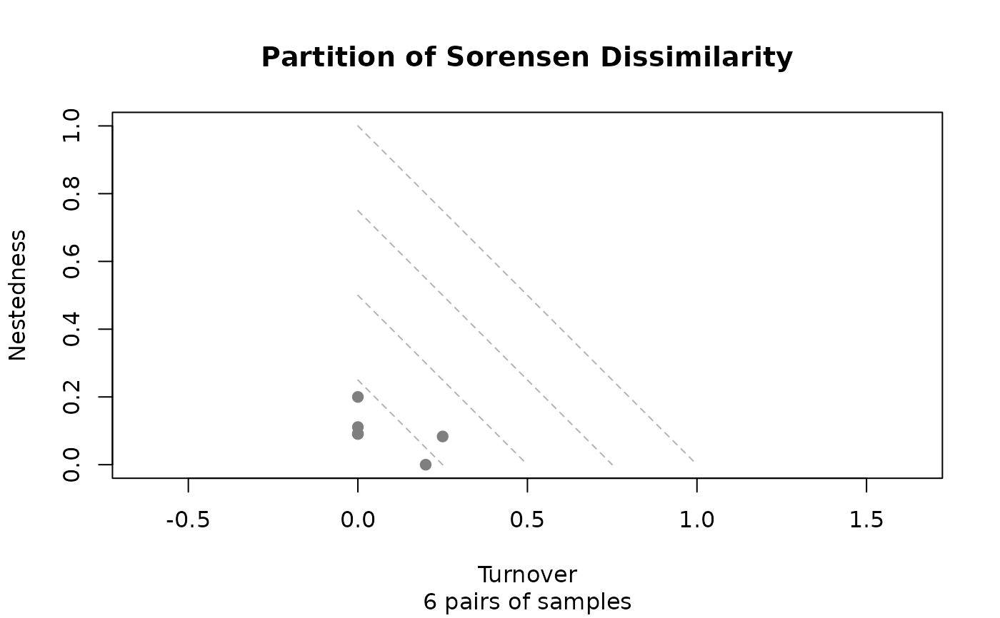

Baselga's partition of the dissimilarity between every pair of samples
into turnover and nestedness (presence/absence), or into balanced
variation and abundance gradients (abundances): all three distance
matrices of one family, computed in one pass, as betapart's
beta.pair() and beta.pair.abund() return them.
Usage
beta_partition(
counts,
index = "sorensen",
margin = 1L,
norm = "none",
pairs = NULL,
clust = NULL,
cpus = n_cpus()
)Arguments
- counts
A numeric matrix of count data (samples \(\times\) features). Values must not be negative.
- index
The family of dissimilarities, as betapart's
index.family:"sorensen"(the default) or"jaccard", of presence/absence, or"bray"(Bray-Curtis) or"ruzicka"("soergel"is accepted too), of abundances.- margin
The margin containing samples.
1if samples are rows,2if samples are columns. Ignored whencountsis a special object class (e.g.phyloseq). Default:1- norm
Only for
index = "bray"or"ruzicka". Normalize the incoming counts first:'none'(the default, as betapart),'percent'(relative abundances),'chord','hellinger'or'binary'.'clr','rclr'and'log'give negative values and are refused.- pairs
Which combinations of samples should distances be calculated for? The default value (
NULL) calculates all-vs-all. Provide a numeric or logical vector specifying positions in the distance matrix to calculate. See examples.- clust
Whether and how to cluster the samples, as for any metric (see
beta_div()): the samples are ordered by the clustering of the total dissimilarity, and all three matrices are put in that order, so that they stay aligned.NULL(the default) keeps the input order.- cpus
How many parallel processing threads should be used. The default,
n_cpus(), is the CPU cores this R process may use, within any limits set on it. Results are the same for anycpus.
Value
A list of class ecodive_beta_partition, with three distance
matrices (ecodive_dist objects): turnover, nestedness and total
for the presence/absence indices, or balanced, gradient and
total for the abundance indices. Attribute index is the family.
plot() draws each pair's two components against each other (see
plot.ecodive_beta_partition()).
Details
The three matrices are those of the family's three metrics:
index | turnover / balanced | nestedness / gradient | total |
"sorensen" | sorensen_turnover() | sorensen_nestedness() | sorensen() |
"jaccard" | jaccard_turnover() | jaccard_nestedness() | jaccard() |
"bray" | bray_balanced() | bray_gradient() | bray() |
"ruzicka" | soergel_balanced() | soergel_gradient() | soergel() |
and are identical to theirs. Their formulas, and the debate about the partition, are on those functions' pages.
Differences from betapart: the abundance indices can use
relative abundances (norm); the matrices are named turnover,
nestedness and total (or balanced, gradient and total) rather
than beta.sim, beta.sne, beta.sor, ...; and pairs computes only
some of the distances.
Input Types
The counts parameter is designed to accept a simple numeric matrix, but
seamlessly supports objects from the following biological data packages:
phyloseqrbiomSummarizedExperimentTreeSummarizedExperiment
For large datasets, standard matrix operations may be slow. See
vignette('performance') for details on using optimized formats
(e.g. sparse matrices) and parallel processing.
References
Baselga, A. (2010). Partitioning the turnover and nestedness components of beta diversity. Global Ecology and Biogeography, 19, 134-143. doi:10.1111/j.1466-8238.2009.00490.x
Baselga, A. (2013). Separating the two components of abundance-based dissimilarity: balanced changes in abundance vs. abundance gradients. Methods in Ecology and Evolution, 4, 552-557. doi:10.1111/2041-210X.12029
Baselga, A., & Orme, C. D. L. (2012). betapart: an R package for the study of beta diversity. Methods in Ecology and Evolution, 3, 808-812. doi:10.1111/j.2041-210X.2012.00224.x
See also
beta_partition_multi() for whole sets of samples.
Other Partitioned metrics:
beta_partition_multi(),
bray_balanced(),
sorensen_turnover()
Examples
bp <- beta_partition(ex_counts)
bp
#> Partition of Sorensen Dissimilarity: 4 samples, 6 pairs
#>
#> $turnover Turnover mean 0.075
#> $nestedness Nestedness mean 0.096
#> $total Total mean 0.171
bp$turnover
#> # A dist: 4 samples (lower triangle)
#> # Simpson Dissimilarity (Sorensen Turnover)
#> Saliva Gums Nose
#> Gums 0
#> Nose 0 0
#> Stool 0.25 0.2 0
#> # Attributes: method
plot(bp)

beta_partition(ex_counts, 'bray', norm = 'percent')
#> Partition of Bray-Curtis Dissimilarity: 4 samples, 6 pairs
#>
#> $balanced Balanced variation mean 0.891
#> $gradient Abundance gradient mean 0
#> $total Total mean 0.891